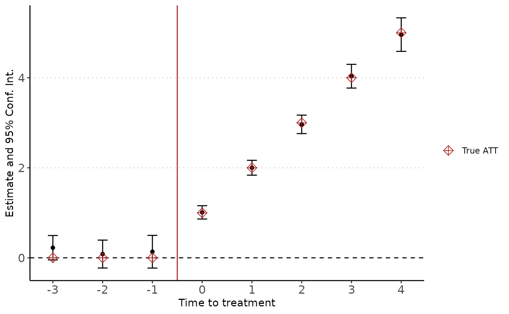
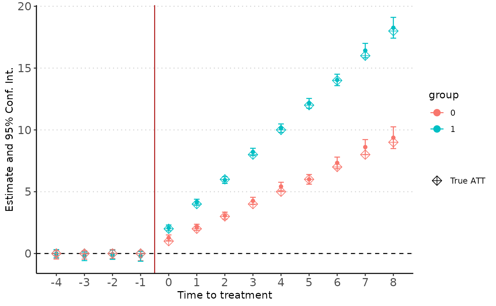

This package implements the imputation method developed by Borusyak, Jaravel, and Spiess (2021) for staggered difference-in-differences. It allows for constant or dynamic treatment effects, among others. The following presentation highlights the main features available using a simple example. Note that this package is a wrapper around the following packages: collapse, data.table and fixest. It allows us a highly efficient estimation procedure, even with large and complex datasets.
To show how to use the package, we will generate a simple dataset similar to the one used in the original paper. Let’s first load the package:
The custom function generateDidData is directly available to generate simulated data. The setup is as follows:
Inf values). This information is summarized in \(g_{it}\), representing the treatment group. The next step consists in defining the relative time to treatment-or horizon-\(k_{it} = t-g\). For example, \(k_{it} = 0\) means that unit \(i\) is treated for the first time in period \(t\).
data <- generateDidData(i = 2000,
t = 6,
hdfe = FALSE,
control = FALSE,
treatment = ~ d * (k + 1))Two implications are worth noting. They have been emphasized by the recent literature on staggered designs and are not specific to our setup.
Let’s plot the true treatment effects over time for each treatment group:
agg <- aggregate(data[, "trueffect"],
by = data[, c("t", "g")],
mean)
ggplot(agg, aes(x = t, y = x, color = as.factor(g))) +
geom_line() +
geom_point() +
labs(x = "Period", y = "True ATT", color = "Treatment group") +
scale_x_continuous(breaks = seq(1, 6)) +
theme_classic() +
theme(legend.position = "bottom")The didImputation function estimates treatment effects. It allows for static and dynamic treatment effects (by horizon). Let’s review some main arguments and options of this function.
y0 is the counterfactual formula, i.e the formula under no treatment. It follows the fixest syntax: fixed-effects are inserted after the |. See the online documentation for further details. We add a 0 as the first argument on the right hand side to exclude the intercept from the estimation.data is the dataset used for the estimation.cohort is the treatment group, in our case the treatment period.unit is the variable containing unit of observation identifiers. By default, it takes the first fixed-effect from the formula.time is the variable containing period of observation identifiers. By default, it takes the second fixed-effect from the formula.coef are the treatment coefficients to be estimated, given as a sequence. By default, it estimates the fully dynamic model with the maximum number of leads and lags. Note that for pre-trends, the omitted periods are the most distant ones. See below if you want to estimate the static treatment effect.
est <- didImputation(y0 = y ~ 0 | i + t,
data = data,
cohort = "g",
nevertreated.value = Inf,
unit = "i",
time = "t",
coef = -Inf:Inf)The summary method reports the results from the estimation:
summary(est)
#> Event Study: imputation method. Dep. Var.: y
#> Counterfactual model: y ~ 0 | i + t
#> Number of cohorts: 4
#> Observations: 12000
#> |-Treated: 5716
#> |-Untreated: 6284
#> Estimate Std. Error t value Pr(>|t|)
#> k::-3 0.225 0.138 1.625 0.104
#> k::-2 0.083 0.158 0.527 0.599
#> k::-1 0.135 0.185 0.731 0.465
#> k::0 1.010 0.075 13.395 <0.001***
#> k::1 2.001 0.084 23.760 <0.001***
#> k::2 2.965 0.105 28.345 <0.001***
#> k::3 4.035 0.134 30.007 <0.001***
#> k::4 4.959 0.190 26.069 <0.001***
#> ---
#> Signif. Code: 0 '***' 0.01 '**' 0.05 '*' 0.1 '' 1
#> Wald stats for pre-trends:
#> Wald (joint nullity): stat = 1.2115, p = 0.303825, on 3 and 6,275 DoF, VCOV: Clustered (i).You can extract the coefficients table if you want to build your own plot or table.
est$coeftable
#> Estimate Std. Error t value Pr(>|t|)
#> k::-3 0.22452247 0.13816495 1.6250320 1.043134e-01
#> k::-2 0.08333174 0.15825858 0.5265543 5.985615e-01
#> k::-1 0.13544823 0.18533088 0.7308454 4.649592e-01
#> k::0 1.00983018 0.07538679 13.3953194 6.439844e-41
#> k::1 2.00110261 0.08422251 23.7597120 8.720127e-125
#> k::2 2.96478863 0.10459647 28.3450165 9.641696e-177
#> k::3 4.03464313 0.13445590 30.0071852 7.908450e-198
#> k::4 4.95892963 0.19022448 26.0688294 8.230391e-150Finally, we can plot the coefficients from the fully dynamic model using the didplot function (note that you can choose the confidence interval level to report). The results are very close to the true effects:
didplot(est) +
geom_point(aes(y = c(0, 0, 0, 1, 2, 3, 4, 5), shape = "True ATT"),
size = 3, color = "firebrick" ) +
scale_shape_manual(name = "", values = c(9))
The didImputation function allows for overall treatment effects through the OATT argument. When set equal to TRUE, the estimation reports the coefficient for the total average treatment to the treated and the pre-trends coefficients from the coef argument:
static <- didImputation(y0 = y ~ 0 | i + t,
data = data,
cohort = "g")
summary(static)
#> Event Study: imputation method. Dep. Var.: y
#> Counterfactual model: y ~ 0 | i + t
#> Number of cohorts: 4
#> Observations: 12000
#> |-Treated: 5716
#> |-Untreated: 6284
#> Estimate Std. Error t value Pr(>|t|)
#> k::-3 0.225 0.138 1.625 0.104
#> k::-2 0.083 0.158 0.527 0.599
#> k::-1 0.135 0.185 0.731 0.465
#> k::0 1.010 0.075 13.395 <0.001***
#> k::1 2.001 0.084 23.760 <0.001***
#> k::2 2.965 0.105 28.345 <0.001***
#> k::3 4.035 0.134 30.007 <0.001***
#> k::4 4.959 0.190 26.069 <0.001***
#> ---
#> Signif. Code: 0 '***' 0.01 '**' 0.05 '*' 0.1 '' 1
#> Wald stats for pre-trends:
#> Wald (joint nullity): stat = 1.2115, p = 0.303825, on 3 and 6,275 DoF, VCOV: Clustered (i).Additional fixed-effects can be directly included in the formula after the |. Lets generate a dataset with a high-dimensional fixed-effects variable and estimate the model:
# generate data with hdfe
data <- generateDidData(i = 2000,
t = 6,
hdfe = TRUE,
control = FALSE,
treatment = ~ d * (k + 1))
# fully dynamic estimation
est <- didImputation(y0 = y ~ 0 | i + t + hdfefactor,
data = data,
cohort = "g")
summary(est)
#> Event Study: imputation method. Dep. Var.: y
#> Counterfactual model: y ~ 0 | i + t + hdfefactor
#> Number of cohorts: 4
#> Observations: 12000
#> |-Treated: 5554
#> |-Untreated: 6446
#> Estimate Std. Error t value Pr(>|t|)
#> k::-3 0.070 0.146 0.483 0.629
#> k::-2 -0.144 0.161 -0.890 0.373
#> k::-1 -0.143 0.183 -0.783 0.434
#> k::0 1.026 0.075 13.707 <0.001***
#> k::1 1.938 0.082 23.557 <0.001***
#> k::2 2.878 0.102 28.134 <0.001***
#> k::3 3.848 0.129 29.746 <0.001***
#> k::4 5.068 0.178 28.497 <0.001***
#> ---
#> Signif. Code: 0 '***' 0.01 '**' 0.05 '*' 0.1 '' 1
#> Wald stats for pre-trends:
#> Wald (joint nullity): stat = 1.26591, p = 0.284247, on 3 and 6,398 DoF, VCOV: Clustered (i).Additional continuous controls can be directly included in the formula before the |. Lets generate a dataset with such control and estimate the model:
# generate data with hdfe
data <- generateDidData(i = 2000,
t = 10,
hdfe = FALSE,
control = TRUE,
treatment = ~ d * (k + 1))
# fully dynamic estimation
est <- didImputation(y0 = y ~ x1 | i + t,
data = data,
cohort = "g")
summary(est)
#> Event Study: imputation method. Dep. Var.: y
#> Counterfactual model: y ~ x1 | i + t
#> Number of cohorts: 8
#> Observations: 20000
#> |-Treated: 9685
#> |-Untreated: 10315
#> Estimate Std. Error t value Pr(>|t|)
#> k::-5 0.117 0.097 1.209 0.227
#> k::-4 0.086 0.106 0.811 0.418
#> k::-3 0.044 0.116 0.382 0.702
#> k::-2 0.122 0.127 0.959 0.338
#> k::-1 0.131 0.141 0.930 0.352
#> x1 1.982 0.011 187.271 <0.001***
#> k::0 1.016 0.064 15.889 <0.001***
#> k::1 1.972 0.068 29.057 <0.001***
#> k::2 2.949 0.074 40.026 <0.001***
#> k::3 4.009 0.083 48.047 <0.001***
#> k::4 5.037 0.096 52.625 <0.001***
#> k::5 5.967 0.111 53.858 <0.001***
#> k::6 6.915 0.130 53.121 <0.001***
#> k::7 8.138 0.164 49.706 <0.001***
#> k::8 9.017 0.241 37.427 <0.001***
#> ---
#> Signif. Code: 0 '***' 0.01 '**' 0.05 '*' 0.1 '' 1
#> Wald stats for pre-trends:
#> Wald (joint nullity): stat = 5,849.3, p < 2.2e-16, on 6 and 10,299 DoF, VCOV: Clustered (i).We may want to run heterogeneity tests, this is particularly useful if we want to run an event-study with multiple contrasts (e.g. sex, age class, region) while keeping the whole sample (such that we maintain statistical power). We can do that simply with option het. The estimation will produce a result for each contrast.
# Generate data with unit invariant heterogeneous effect
data_het <- generateDidData(i = 5000,
t = 10,
treatment = ~ d * (ig + 1) * (k + 1)
)
# Compute true ATT for later plot
trueATT <- data.frame(k = rep(-4:8, 2),
ig = c(rep(1, 13), rep(0,13)),
d = as.numeric(rep(-4:8, 2) >= 0))
trueATT$y <- with(trueATT,{
d * (ig + 1) * (k + 1)
})
# Estimate the heterogeneous effect
est_het <- didImputation(y ~ 0 | i + t,
cohort = "g",
het = "ig",
data = data_het,
coef = -4:Inf)
didplot(est_het) +
geom_point(data = trueATT,
aes(x = k, y = y, color = factor(ig), shape = "True ATT"),
size = 3) +
scale_shape_manual(name = "", values = c(9))
The standard errors are computed using an alternating projection method. You can tweek its meta-parameter by changing tol and maxit. To speed up the estimation procedure, you can set with.se = FALSE. Standard errors will not be computed in this case but estimation will be significqntly quicker.
Borusyak, K., Jaravel, X., & Spiess, J. give a condition on weights such that consistency of estimators holds. This condition states that the Herfindahl index of weights must converge to zero. Another interpretation is that the inverse of the index is a measure of ‘effective sample size’. Authors recommand an effective sample size of at least 30. If the effective sample size is lower, a warning will be thrown. You can tweek this parameter by changing effective.sample option in didImputation.